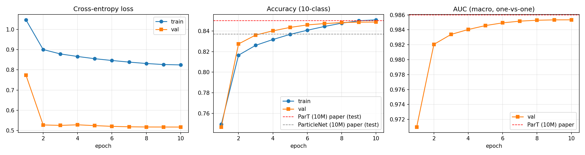
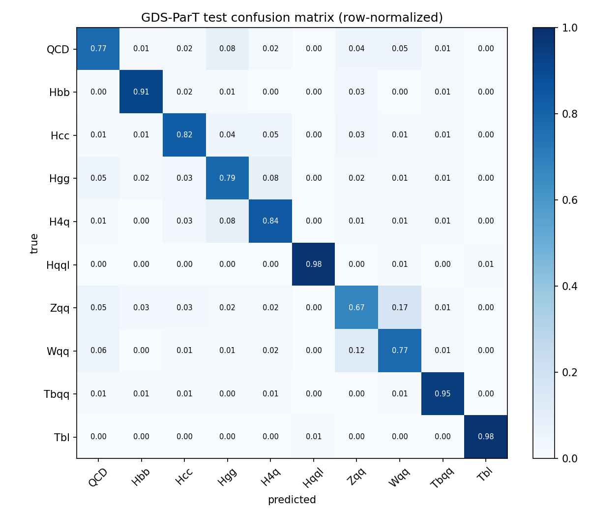

How a transformer reads a particle jet, and two ways of teaching it physics
This page compares ParT (Particle Transformer, Qu et al. 2022) with GDS-ParT (Gated Dual-Stream Particle Transformer) and builds every idea from the start. It covers tensors, layers and attention, then both architectures with their full math. An interactive model computes both kinds of attention live in your browser.
Numbers on this page come from this repository: gds_part_colab.py, data/jetclass_cache.py, train_gds_part.py and results/v2_shared_10M_10ep.
The question both models answer
At the LHC, a single quark or gluon turns into a narrow spray of up to 100+ particles called a jet. Different originating particles leave different patterns inside the jet. A Higgs boson decaying to two b-quarks produces two hard sub-clusters with displaced tracks; a top quark produces three. The task is jet tagging: given the list of particles in one jet, decide which of 10 processes produced it.
A transformer is a natural fit because a jet is a set: the particles have no natural order. But physics also depends on pairs of particles (their angle, their combined mass), and a plain transformer cannot see pairs directly. Both models feed pairwise physics in, at different places:
ParT pairs change who listens to whom
Pair features become a number added to each attention score, called a bias. The particle vectors themselves are not changed.GDS-ParT pairs change what each particle looks like
Pair features are summarised per particle into gates. The gates rescale every query/key channel before the scores are computed.The current GDS-ParT (v2) keeps the gates and also adds a ParT-style bias. This "hybrid" design is why its results sit so close to ParT's. Chapter 8 shows exactly what each mechanism can and cannot express.
Jets and the physics inputs
The models see two kinds of numbers: 17 numbers per particle and 4 numbers per pair of particles.
Coordinates: η, φ and pT
Colliders use cylindrical coordinates around the beam:
- pT = √(px²+py²) is the momentum transverse to the beam.
- φ is the azimuthal angle around the beam.
- Rapidity y = ½ ln((E+pz)/(E−pz)), or its massless version η, measures the angle relative to the beam.
Distances inside a jet are measured in the (y, φ) plane:
The 17 per-particle features
Each feature is shifted and scaled into roughly −5…5, as in the official JetClass configuration (data/jetclass_cache.py):
| # | Feature | Formula / meaning | Why it matters |
|---|---|---|---|
| 0 | log pT | (ln pT − 1.7)·0.7 | hardness of the particle |
| 1 | log E | (ln E − 2.0)·0.7 | energy |
| 2 | log pT/pT,jet | (ln(pT/pT,jet) + 4.7)·0.7 | momentum share, independent of jet energy |
| 3 | log E/Ejet | (ln(E/Ejet) + 4.7)·0.7 | energy share |
| 4 | ΔR to axis | (√(Δη²+Δφ²) − 0.2)·4 | core vs. wide-angle radiation |
| 5–6 | Δη, Δφ | offset from the jet axis | position in the jet "image" |
| 7 | charge | −1, 0, +1 | tracks vs. neutrals |
| 8–12 | particle ID | one-hot: ch. hadron, neu. hadron, γ, e, μ | leptons signal W and top decays |
| 13–16 | tanh d0, σd0, tanh dz, σdz | track impact parameters and their errors | displaced vertices point to b/c quarks |
The 4 pairwise features
For every ordered pair (i, j) with four-momenta pi, pj, the GPU computes (pairwise_features()):
Physics reading
- Δ: how collinear the pair is.
- kT: transverse momentum of the softer particle relative to the harder one. QCD splittings are ordered in this variable (the Lund plane).
- z: momentum-sharing fraction of a splitting. Soft gluon emission has small z.
- m²: invariant mass of the pair. Pairs from a W, Z, H or top decay cluster around those masses.
Properties
- Symmetric: Uij = Uji.
- Boost-invariant along the beam, because they use rapidity differences.
- Logarithms compress values spanning several orders of magnitude into a few units.
- Self-pairs (i = j) and padding pairs are set to 0.
Tensors from zero
A tensor is a grid of numbers with a shape, which lists how many entries there are along each axis. Everything in these models is a tensor, and reading shapes is the most useful skill for understanding the code.
The tensors in this model
| Name in code | Shape | Read as |
|---|---|---|
particle_features | (B, N, 17) | B jets × N particle slots × 17 features |
pairwise_features U | (B, N, N, 4) | for every jet, an N×N table with 4 numbers in each cell |
mask | (B, N) bool | True for a real particle, False for padding |
x (hidden state) | (B, N, 128) | each particle as a 128-dimensional learned vector |
rel | (B, N, N, 64) | each pair as a 64-dimensional learned vector |
| attention scores | (B, H, N, N) | H = 8 heads, each with an N×N "who looks at whom" table |
logits | (B, 10) | one score per jet class |
Batches and padding
The GPU processes B jets at once, so every jet is padded to the same length N with dummy rows. The boolean mask records which rows are real. Masking guarantees that padding never influences a real particle: its attention logit is set to −∞, so after softmax its weight is exactly 0.
Operations you need
Element-wise product ⊙
Multiply matching entries: (a⊙b)c = acbc. The shapes must match. This is how a gate scales channels.Dot product ·
a·b = Σc acbc: one number measuring how aligned two vectors are. This is how attention compares two particles.Matrix product
(AB)ij = Σc AicBcj: many dot products at once. QK⊤ gives the dot product of every pair.Broadcasting
Combining (N, 1) with (1, N) behaves like (N, N). The code builds all pair differences withy[:, :, None] − y[:, None, :].Reduction
A sum, mean or softmax along one axis removes that axis or normalises along it. Averaging (N, N, 64) over j gives (N, 64), a per-particle summary of its pairs.einsum
Writes any of these with index letters.einsum("bij,bijd->bid", α, rel) means summarybid = Σj αbij relbijd.Neural-network building blocks
Every module in both models is assembled from six pieces.
1. Linear layer
2. Nonlinearity: GELU, tanh, sigmoid
3. LayerNorm
4. Residual connection
5. Softmax
6. MLP (feed-forward network)
Embeddings: two streams
Raw features are lifted into learned vector spaces. This gives the "dual stream": a particle stream (B, N, 128) and a pair stream (B, N, N, 64). Both models build these streams the same way.
Self-attention from scratch
Attention lets every particle gather information from every other particle, weighted by relevance. Click through the steps.
All steps in one line
Multi-head attention
The 128 channels are split into H = 8 heads of d = 16 channels each. Each head runs its own attention and can attend by a different criterion, for example one by angle and another by charge. The head outputs are concatenated back to 128 channels and mixed by WO.
Why divide by √d?
If q and k have independent entries with variance 1, their dot product over d channels has variance d. Dividing by √d brings the variance back to 1. Without this, softmax saturates (one weight ≈ 1, the rest ≈ 0) and its gradients vanish.
Permutation equivariance and the missing piece
If you reorder the input particles, the output rows are reordered in exactly the same way, so no particle ordering is built in. But plain attention sees particles only through their own vectors qi and kj. It has no direct access to pair quantities such as invariant mass, which depend on both particles jointly. Both architectures exist to fix this gap.
ParT: physics as an additive attention bias
ParT (Qu, Li & Qian, ICML 2022) maps each pair's embedding to one number per head and adds it to that pair's attention score.
Reading the bias as a multiplicative prior
Exponentiating inside the softmax turns the additive bias into a factor that multiplies each attention weight:
A large exp(bij) says "whatever the content, i should look at j". The bias acts as a learned, physics-informed adjacency matrix laid over content-based attention.
Strengths
- Exactly pair-specific. Each (i, j) gets its own number, so the model can learn rules like "attend to partners with mij ≈ mW" directly.
- Cheap. One Linear layer 64 → 8, computed once and shared by all layers in ParT.
- Measurably useful. In the ParT paper, removing the bias costs about 1.2 accuracy points on 100M jets (0.861 → 0.849).
Limits
- It changes who is attended to, not what is read. The values vj and the geometry of q and k are untouched.
- It is content-independent: bij is the same in every layer and ignores what particle i has learned so far.
- It is one scalar per head, so all 16 channels of a head get the same push.
GDS-ParT: physics as multiplicative gates on Q and K
GDS-ParT asks a different question: given what this particle's relations say about its neighbourhood, which features should it emphasise when it asks (Q) and when it answers (K)?
Step 1: summarise each particle's pairs
Particle i owns a row of N pair vectors ri1 … riN. The RelationalGate reduces that row to one vector si ∈ ℝ64 in one of two ways:
v1 / shared mode: uniform mean
v2 per-layer mode: attention-weighted
Step 2: turn the summary into two gates
The last layer of each MLP is zero-initialised. At the start of training, tanh(0) = 0, so every gate is exactly 1 and the model starts as a plain transformer. It moves a gate away from 1 only where doing so reduces the loss. v1 used sigmoid ∈ (0, 1), which starts at 0.5 and can only shrink channels.
Step 3: gate Q and K before the dot product
GDSParTBlock.forward. The blue path is specific to GDS. The orange path is the ParT bias, kept in the v2 hybrid.What a gate means physically
The summary si describes particle i's relational environment: how many collinear neighbours it has, how hard their splittings are, and whether it pairs to a heavy-resonance mass. The gates then re-weight the feature channels used for matching. For example, a particle inside a two-prong H→bb̄ substructure could amplify displacement channels and suppress soft-radiation channels before it asks "who should I attend to?". The pairs change the coordinates of the comparison, not only the final scores.
Side by side: what each mechanism can express
Expanding the gated score channel by channel makes the difference exact.
Plain attention compares particles with the Euclidean inner product qi⊤I kj. GDS-ParT replaces the identity matrix with a diagonal metric that depends on the relational context of both particles. ParT instead adds a constant outside the inner product.
| Plain | ParT | GDS gates | GDS-ParT v2 (hybrid) | |
|---|---|---|---|---|
| score sij | qiᵀkj/√d | qiᵀkj/√d + bij | qiᵀ diag(gQi⊙gKj) kj/√d | gated score + bij |
| how pair info enters | never | additively, per (i, j, head) | multiplicatively, per (i, channel) and (j, channel) | both |
| depends on content q, k? | – | no: the bias is the same whatever q and k are | yes: it rescales q and k themselves | both |
| pair-specific? | – | yes: one value per exact pair | factorised: gi·gj, a rank-1 structure per channel | yes |
| effect on softmax | – | multiplies weights by ebij | changes the sharpness and direction of matching per channel | both |
| varies by layer? | – | no (bias shared by all layers) | yes in per-layer mode, no in shared mode | configurable |
| at initialisation | – | random bias | exactly plain attention (g = 1) | plain attention + random bias |
Gradients: how each mechanism learns
ParT bias
GDS gate
Interactive lab: compute both attentions live
A toy jet with 6 particles and a tiny model (d = 8, pair dimension 6, one head) with fixed random weights. Drag the particles, or focus one and use the arrow keys. The pair features, ParT bias, gates and all three attention maps are recomputed from the formulas above.
With the 1+tanh gate at γ = 0, the GDS map equals the plain map. This is the zero-initialised start of training. Raise γ to imitate a gate that has learned to move away from 1.
Toy jet (η–φ plane): drag the particles
Line thickness shows the GDS attention between two particles.
Pair invariant mass ln m²ij
Gate per particle (mean of gQ over channels)
Each row i is one softmax distribution showing how much particle i attends to each particle j. Cell values are weights × 100.
The full model and how it is trained
v2_shared_10M_10ep: 8 gated blocks (shared gate, hybrid bias), 2 class-attention blocks, 2.07M parameters.One block (pre-LN)
Class-attention pooling
A learned CLS token c ∈ ℝ128 attends over all particles in 2 class-attention blocks, and only c is updated, as in CaiT and ParT. It becomes a single jet vector, and an MLP 128 → 128 → 10 produces the logits z. v1 averaged the particle vectors (masked mean) instead.
Loss and probabilities
Label smoothing stops the model from becoming over-confident, which improves calibration and generalisation.
Optimisation recipe
| Piece | Setting | What it does |
|---|---|---|
| Optimizer | AdamW, lr 1e-3, weight decay 0.01 | adaptive per-parameter step sizes plus decoupled weight shrinkage |
| Schedule | 5% linear warm-up, then cosine decay to 0 | avoids early instability, then anneals |
| Batch | 512 jets, split into micro-batches so that B·N² ≤ 2M | gradient accumulation keeps the N² pair tensor within 6 GB of VRAM |
| Precision | AMP float16 with GradScaler | about 2× faster; loss scaling prevents underflow |
| Stability | gradient clipping at norm 1.0 | limits rare very large updates |
| EMA | θ̄ ← 0.999·θ̄ + 0.001·θ (0.9999 for the 20-epoch run) | a smoothed copy of the weights is used for evaluation |
| Memory | activation checkpointing per block | recomputes the N×N internals during the backward pass instead of storing them |
| Data | ragged memmap cache, length-bucketed batches | about 1.9 KB per jet on disk; pair features are computed on the GPU for each batch |
Evaluation metrics (definitions from the ParT paper)
- Accuracy: the argmax over 10 classes compared with the true class.
- AUC: the macro average of one-vs-one areas under the ROC curve.
- Background rejection RejX% = 1/FPR at X% signal efficiency, using the score S/(S+B) against QCD. "Rej50 = 7143 for H→bb̄" means that when half of the true H→bb̄ jets are kept, only 1 in 7143 QCD jets passes.
Cost and complexity
| Component | Parameters | Compute per jet | Memory |
|---|---|---|---|
| Pairwise embedding (both models) | ≈ 4.5k | O(N²·64²) | (N,N,64): the dominant cost |
| ParT bias Wbias | 520 | O(N²·64·H) | (H,N,N) |
| One RelationalGate (shared) | ≈ 49k | O(N²·64) aggregation + O(N·128²) | 2 × (N,128) |
| Per-layer gates (8 layers) | ≈ 8 × 57k | 8× the aggregation, plus context scores | 8 × (N,N) α |
| Attention, per head | — | O(N²·d) | (N,N) |
With N = 128, one jet's pair stream holds 128·128·64 ≈ 1M numbers per layer. This is why the trainer computes pair features on the fly, buckets jets by multiplicity (most have about 30–60 particles), and splits batches into micro-batches. The gate itself is cheap compared with the pair stream; the expensive step is building r, which both models do.
Results
GDS-ParT v2 was trained on 10M jets for 10 epochs on a 6 GB laptop GPU and tested on 1M balanced JetClass test jets. The published numbers come from Tables 1 and 3 of the ParT paper.
| Model | Train jets | Params | Accuracy | AUC | Hbb Rej50 | Tbqq Rej50 | Wqq Rej50 |
|---|---|---|---|---|---|---|---|
| ParticleNet | 10M | 370k | 0.837 | 0.9837 | 5,848 | 5,495 | 307 |
| ParT | 10M | 2.14M | 0.850 | 0.9860 | 8,734 | 12,579 | 431 |
| ParT plain (no bias) | 100M | 2.13M | 0.849 | 0.9859 | 9,569 | 17,699 | 384 |
| GDS-ParT v1 (gates only) | 10M | 1.28M | 0.827 | — | — | — | — |
| GDS-ParT v2 (hybrid) | 10M | 2.07M | 0.848 | 0.9853 | 7,143 | 10,000 | 328 |


Beyond: the per-particle Mixture-of-Experts
The follow-up repository GDS-ParT-MoE keeps the gated attention and replaces each block's FFN with 8 expert FFNs plus a router:
The router chooses experts one particle at a time, so every routing decision can be compared with that particle's physics. In the first fine-tuned model, the layer-0 experts split particles by charge and species (normalised mutual information 0.45 and 0.43), and one expert specialises in muons and displaced tracks. Attention describes how particles exchange information; the experts show which kinds of particles the network treats differently.
Glossary
| Tensor | an n-dimensional grid of numbers; its shape lists the size of each axis |
| Embedding | a learned vector that represents an object, such as a particle or a pair |
| Channel | one coordinate of an embedding vector (128 per particle here) |
| Q, K, V | query ("what am I looking for"), key ("what do I offer"), value ("what I send"): three linear views of each particle |
| Head | an independent attention computation on a 16-channel slice |
| Logit | an unnormalised score before softmax |
| Bias (ParT) | an additive term on the attention logits, computed from pair features |
| Gate (GDS) | a multiplicative factor per channel, computed from a particle's summary of its pairs |
| Mask | a boolean marking real particles; padded positions get −∞ logits |
| Permutation equivariance | reordering the inputs reorders the outputs the same way, so no order is assumed |
| Pre-LN | LayerNorm applied before each sub-layer, inside the residual branch |
| EMA | exponential moving average of the weights, used for evaluation |
| AMP | automatic mixed precision: float16 compute with float32 master weights |
| kT, z, Δ, m² | splitting hardness, momentum share, opening angle, pair invariant mass |
| RejX% | 1 / (QCD mistag rate) at X% signal efficiency |
References: H. Qu, C. Li, S. Qian, Particle Transformer for Jet Tagging, ICML 2022, arXiv:2202.03772. JetClass dataset, Zenodo record 6619768. H. Touvron et al., Going deeper with Image Transformers (CaiT class attention), 2021.
Doubts, answered
Questions asked while building this project, each answered in place. New questions are added to the end of this list.
Q1What exactly is the "new attention" in GDS-ParT?
In normal attention, particle i compares itself with particle j through sij = qi·kj/√d. GDS-ParT adds three steps in front of this comparison:
- Summarise the pairs. Particle i has a pair vector rij (64 numbers built from Δ, kT, z, m²) for each neighbour j. These are averaged into one summary si. The average is uniform in shared mode; in per-layer mode it is weighted by αij = softmaxj(rij·Wctxhi/8).
- Make gates. gQi = 1 + tanh(MLPQ(si)) and gKi = 1 + tanh(MLPK(si)), one value in (0, 2) per channel. They start at exactly 1.
- Gate Q and K. q′i = qi⊙gQi, k′j = kj⊙gKj. V is left untouched.
Each channel's contribution to the score is amplified or suppressed according to the physical neighbourhood of both particles. In effect, the gates give each pair a learned diagonal metric. The v2 model also keeps ParT's additive bias bij, because a product of per-particle gates cannot single out one exact pair (see Chapter 8).
Q2What is GDS-ParT right now (version, size, score, status)?
| Part | v1 (original) | v2 (current) |
|---|---|---|
| Gate | sigmoid ∈ (0,1) | 1 + tanh ∈ (0,2), zero-initialised |
| Pair summary | uniform mean, shared by all layers | shared mean (trained run) or attention-weighted per layer |
| ParT bias | no | yes (hybrid) |
| Pooling | masked mean | 2 class-attention blocks (CLS token) |
| Depth / params | 6 layers / 1.28M | 8 layers / 2.07M |
| Test acc (10M jets) | 0.827 | 0.848 |
In progress: a 20-epoch run on 10M jets. Epoch 8 is saved (val 0.8473), and the run is resuming on the lab PC from checkpoints/v2_shared_10M_20ep/last.pt.
asked 27 Oct 2026 · see Results
Q3How does the Mixture-of-Experts (MoE) version work?
- Only the FFN changes. The gated attention, the pair bias and the CLS pooling are identical to GDS-ParT. Padding particles are never routed.
- Sparse upcycling. All 8 experts start as copies of the trained dense FFN (plus 1% noise). The untrained MoE therefore reproduces the dense model exactly (val 0.8488), and fine-tuning lets the experts drift apart and specialise.
- Keeping experts balanced. A load-balancing loss N·Σe fe·P̄e stops all particles from going to one expert, and a z-loss mean(logsumexp(logits)²) keeps router logits small. Both are added to the cross-entropy loss.
- Cost. 9.46M parameters in total, but each particle uses only about 3.1M, because just 2 of the 8 experts run.
- Reading the physics.
analyze_experts.pymeasures the mutual information between the chosen expert and particle type, charge, pT share, ΔR, |d0| and Lund kT. It also removes one expert at a time to see which jet classes suffer.
First finding: layer-0 experts split particles by charge (NMI 0.45) and species (0.43). One expert is 4.5× enriched in muons and displaced tracks and is used most by H→bb̄ jets. The deeper layers had not specialised yet after a short fine-tune.
asked 27 Oct 2026 · see Chapter 13, GDS-parT-MoE
Q4Why is training so slow on the lab PC? What is the difference between a CPU and a GPU?
CPU: a few fast, clever cores
About 14 cores (20 threads) at around 5 GHz. Each core is optimised for branching, sequential logic, and low latency. A CPU does roughly 1 TFLOP/s in float32 for this kind of work.GPU: thousands of simple cores
Thousands of small cores and tensor cores run the same instruction on different data (SIMT). An RTX 4050 does about 40+ TFLOP/s in float16 with tensor cores, and its memory bandwidth is several times higher than the CPU's.Why this model is especially GPU-hungry:
- Batched matrix multiplies. Every layer computes QKᵀ, the pair embedding and the FFNs as large matrix multiplies, which is exactly the work GPUs are built for.
- The N² pair stream. One jet with N = 128 has 128 × 128 × 64 ≈ 1M pair numbers per layer. Moving that much data needs high memory bandwidth.
- Mixed precision. On the GPU the model runs in float16 on tensor cores. On a CPU, AMP is off and everything runs in float32.
- Two jobs on one CPU. When the dense run and the MoE run share 20 threads, they compete for the cores and the cache, so each gets much less than half the throughput.
What that means in time: one epoch of 10M jets takes about 65 minutes on the laptop GPU. On the lab CPU it takes about 9 hours alone and more than 24 hours when shared. That is why the runs are now queued one after another, and why access to a GPU node on an HPC cluster would help.
asked 23 Oct 2026
Q5What is LayerNorm? Is γ ⊙ (x − μ) a dot product?
LayerNorm acts on one particle's vector x ∈ ℝ128 at a time:
- Centre: subtract the mean of the particle's 128 channels, so the vector has mean 0.
- Scale: divide by the standard deviation, so the vector has variance 1. ε = 10−5 prevents division by zero.
- Re-style: multiply channel c by a learned γc and add a learned βc. This lets the network restore any scale or offset it actually needs. γ starts at 1 and β at 0.
Worked example (D = 4)
| c=1 | c=2 | c=3 | c=4 | note | |
|---|---|---|---|---|---|
| x | 2 | 4 | 6 | 8 | μ = 5, σ² = 5, σ ≈ 2.236 |
| (x − μ)/σ | −1.34 | −0.45 | 0.45 | 1.34 | mean 0, variance 1 |
| γ (learned) | 1.0 | 2.0 | 0.5 | 1.0 | |
| γ ⊙ (…) | −1.34 | −0.89 | 0.22 | 1.34 | still 4 numbers (a vector) |
| + β (β = 0.1) | −1.24 | −0.79 | 0.32 | 1.44 | output |
A dot product γ·(x − μ)/σ would instead give the single number −1.34 − 0.89 + 0.22 + 1.34 = −0.67, which is not what LayerNorm does.
Why the model needs it
- As x passes through 8 residual blocks, its scale can drift. LayerNorm resets the scale before each attention and FFN, which keeps q·k/√d and the softmax in a sensible range and keeps training stable.
- It normalises across the channels of one particle, not across the batch, unlike BatchNorm. Each particle and each jet is therefore treated independently, and padded particles cannot leak into real ones.
- In this code it appears as
norm1(before attention),norm2(before the FFN), the inputLayerNorm(17)in the particle embedding, andfinal_normbefore the classifier.
asked 27 Oct 2026 · see Chapter 3
Q6What is the symbol in a circle: ⊙ vs ⊗ (and ⊕)?
| Symbol | Name | Rule | Shapes | Example with a = (1, 2, 3), b = (4, 5, 6) |
|---|---|---|---|---|
| ⊙ | Hadamard / element-wise product | (a⊙b)c = acbc | (D) ⊙ (D) → (D) | (4, 10, 18) |
| · | dot / inner product | a·b = Σc acbc | (D) · (D) → scalar | 4 + 10 + 18 = 32 |
| ⊗ | outer / tensor (Kronecker) product | (a⊗b)ij = aibj | (D) ⊗ (D) → (D, D) | [[4,5,6],[8,10,12],[12,15,18]] |
| ⊕ | direct sum / concatenation (or XOR) | a⊕b = (a, b) | (D) ⊕ (D) → (2D) | (1, 2, 3, 4, 5, 6) |
The dot product is just the Hadamard product followed by a sum: a·b = Σ(a⊙b). The diagonal of a⊗b is a⊙b.
Where each one appears in the model
- ⊙ (the GDS gates): q′i = qi ⊙ gQi. Each of the 128 query channels gets its own multiplier, and q′ is still a 128-vector. LayerNorm's γ ⊙ (x − μ)/σ works the same way. In code this is simply
q * gate_q. - · (attention scores): sij = q′i·k′j/√d, which gives one number per pair.
- ⊗ (implicitly, the N×N structure): the score matrix QKᵀ is a sum of outer products, Σc q:,c ⊗ k:,c. Inside one channel, the gate factor for every pair is gQ:,c ⊗ gK:,c, an outer product of two N-vectors. This is the "rank-1 per channel" limitation from Chapter 8: the gates can only build pair weights that factorise as (something about i) × (something about j), whereas the ParT bias bij can be any N×N table.
- ⊕: not used in the formulas. Concatenating the 8 head outputs back to 128 channels is a direct sum.
No doubts match that search.